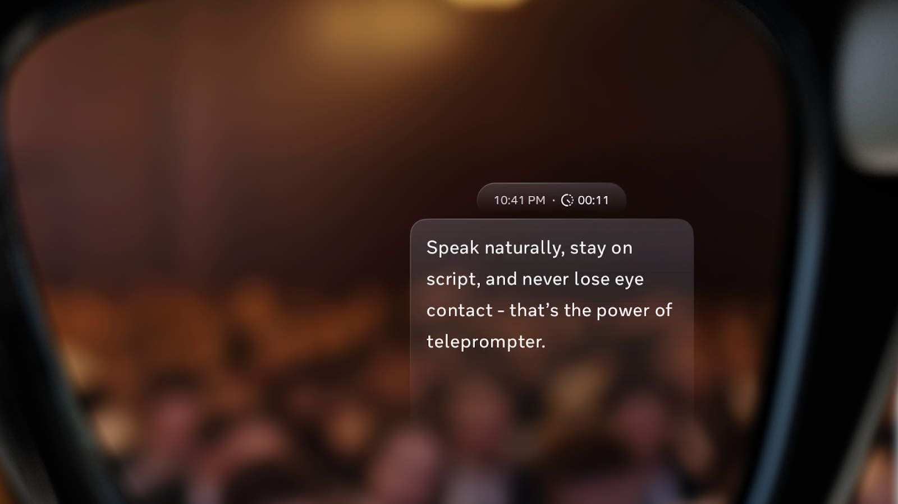
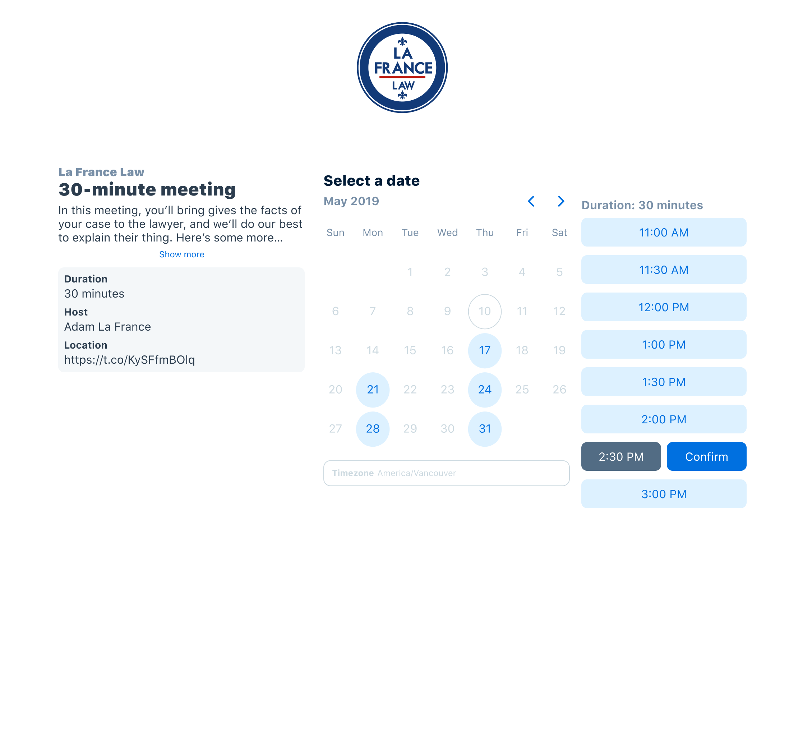
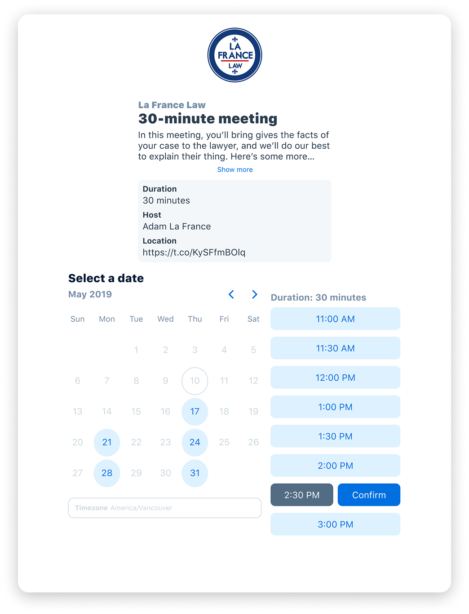
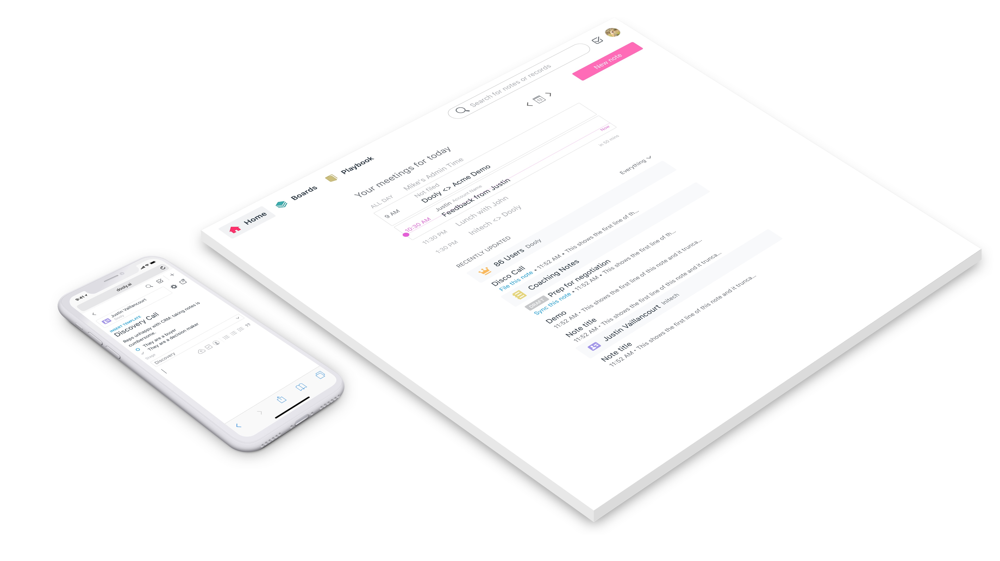
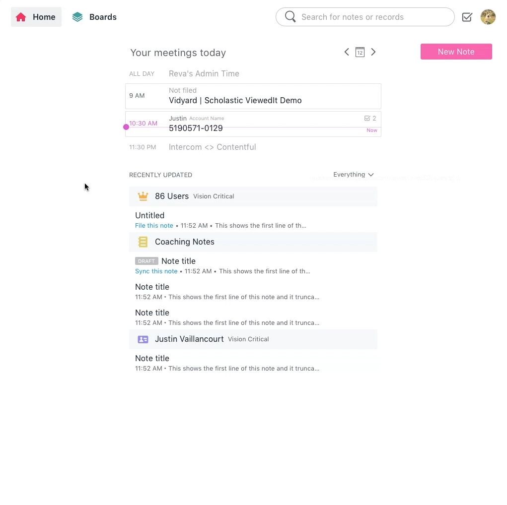
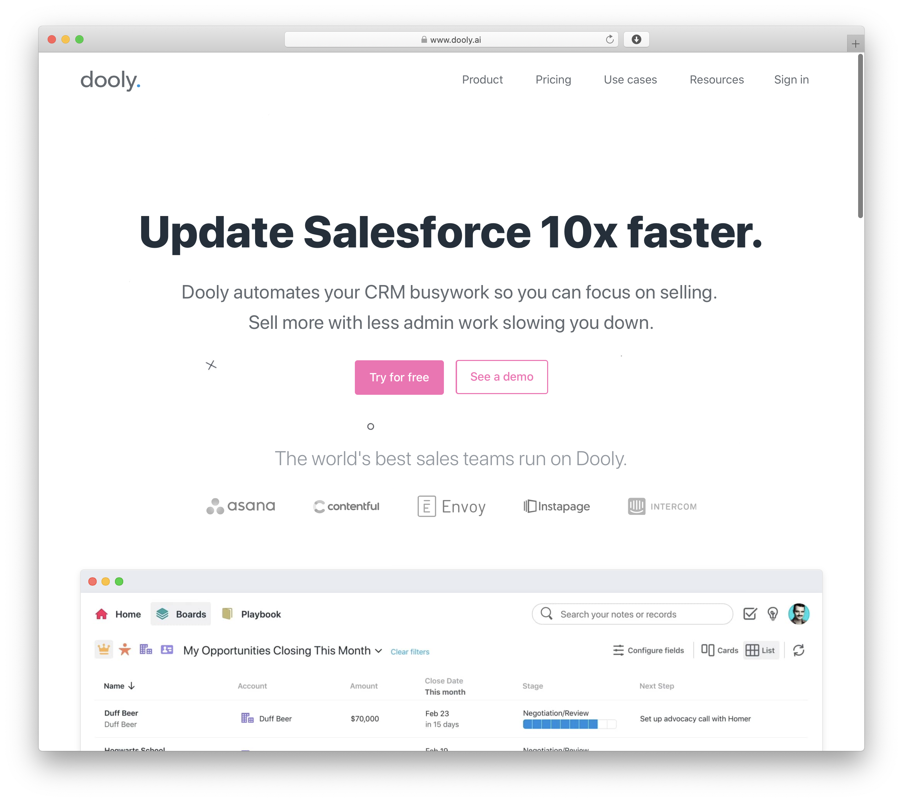
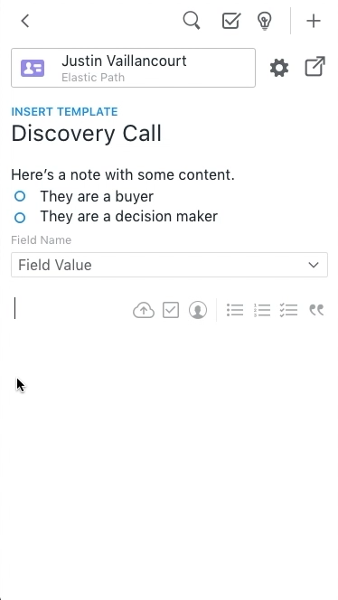

Product Designer · Seattle


Staff Product Designer · Meta Reality Labs
Seattle, WA
Meta Ray-Ban Display
I shaped the design of several flagship features on Meta Ray-Ban Display such as Teleprompter, EMG handwriting input, the suite of Time apps, and the music player. More AI-native experiences are still to come as part of my prior work on the AI Foundations team.

Staff Product Designer · Meta Reality Labs
Seattle, WA
Ray-Ban Meta
I worked on this category-defining product since it was in its Discovery phase, helping define the privacy-focused interaction model and leading the design for both live-streaming and POV video calling across Meta's family of apps. Ray-Ban Meta headlined Meta Connect, and has led to many similar products across the AI wearables industry.

Design Lead · Clio
to
Vancouver, BC
Clio Scheduler
I led design for Clio's Client Experience portfolio and conceived the Clio Scheduler, an online booking product for law firms that headlined Clio's customer conference. Clio is the world's leading legal practice platform, used in 130+ countries.


Lead Designer · Dooly
to
Vancouver, BC
Dooly
As the first hire and sole designer, I shaped Dooly end to end across product, brand, and front-end, building a note-taking tool that helps customer-facing teams have better meetings. We grew from zero to dozens of enterprise accounts, including Asana, Intercom, and Contentful.




Education & contact
Thanks for scrolling.
I'm currently looking for my next role. If you've got questions, want to learn more, or have something you'd like to build together, feel free to reach out.
On the side I'm building Trip Cams, a road-trip companion that surfaces live highway cameras along your route, and a personal playground for AI design and development. Feature requests welcome!
- Capilano University North Vancouver, BC
- Interactive Design Diploma –
- University of Alberta Edmonton, AB
- Bachelor of Education, Math major, Art minor –